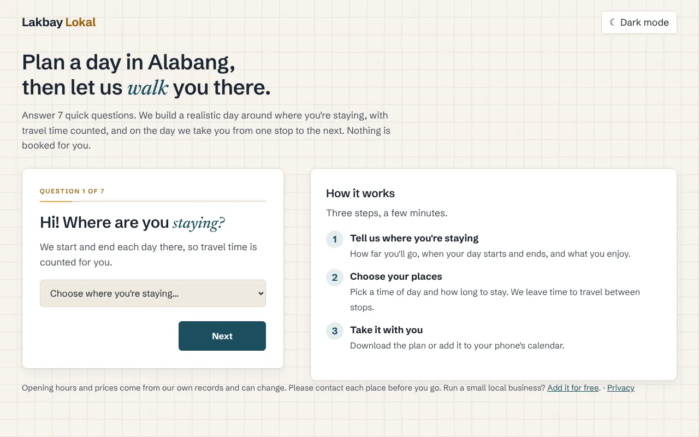
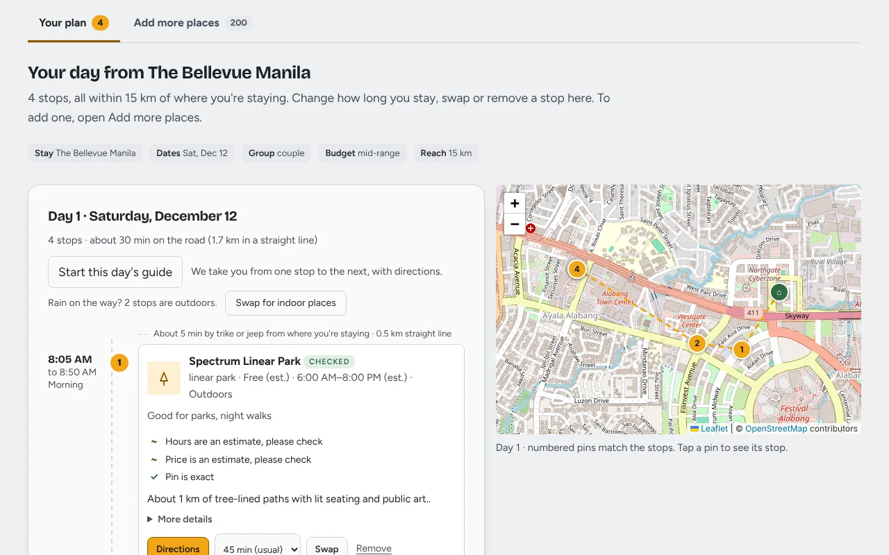

Personal project, in progress
Lakbay Lokal
A free trip planner for the Philippines that I'm building on my own. It turns where you're staying and how far you'll go into a timed day of small, local places, with travel time between each stop.
The design


The mission
Big travel sites send everyone to the same places. Lakbay Lokal points travellers to small, local, lesser-known places near where they're staying.
It only recommends places from its own list and never makes one up. The list has about 220 real places: 34 popular Alabang and Muntinlupa places I researched from public pages, plus 186 from OpenStreetMap that the site marks "Details not checked yet". The planner picks checked places first.
What I did
- Planning engine: filters places by budget, group, opening hours and interests, scores them, and builds each day outward from the stay. Travel time comes from straight-line distance, adjusted for winding roads and a trike or jeepney's speed, plus time to find a ride.
- Grounded AI: Gemini only rewrites a stop's stored facts as a sentence or two and is told not to add any. If there's no key or the call fails, a template writes the text instead.
- Traveller features: editable plans, a rainy-day swap to indoor places, a day map, calendar and Markdown exports, saved drafts, and a guide for the day itself with a compass and directions. A service worker keeps the plan and guide working offline.
- Owner sign-ups: a form where small business owners add their place. Nothing goes live until I check it and approve it with a script.
- Testing and deployment: unit tests for the engine, browser tests with Playwright, and deployment on Render.
The architecture
- Backend
- Python, FastAPI
- Data
- SQLite, with every place record checked against a JSON Schema; OpenStreetMap import scripts
- Frontend
- HTML, CSS and JavaScript, Leaflet maps
- AI
- Google Gemini API, free tier, with a template fallback
- Offline
- service worker
- Hosting
- Render